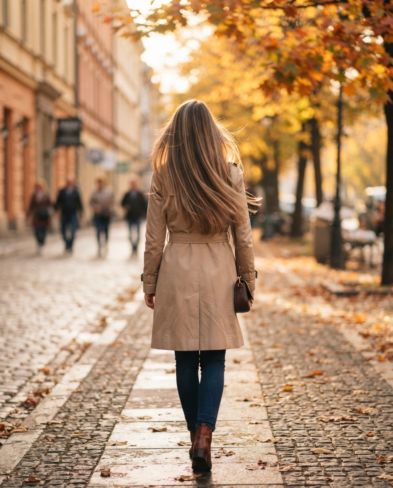

브라운부터 레드까지,
내 톤에 맞는 가을 헤어 컬러를 골라 봤어요.
잿빛·푸른기가 도는 브라운. 모발의 붉은기·주황기를 잡아 맑고 도시적인 느낌이에요.
카키빛이 도는 브라운. 붉은기를 잡아주면서 얼굴 톤이 환해 보여요. 홍조 있는 피부에도 추천.
퓨어 레드보다 채도가 낮고 깊이감 있는 레드. 도시적인 분위기예요.
레드의 생기 + 브라운의 안정감. 선명한 레드가 부담될 때 시작점.
피부를 더 맑고 투명하게 보이게 해서 차분한 가을 룩에 잘 맞아요.
웜톤 피부의 혈색을 살려줘요. 윤기 관리가 필수예요.
짙고 탁한 색은 모발을 한 덩어리로 보이게 해요. 애쉬·베이지를 섞어 붉은기를 잡으면 빛을 받을 때 모발이 살짝 비쳐요.
무작정 어둡게 덮지 말고 은은한 쿨톤이나 매트 계열로. 숱이 많아도 답답해 보이지 않아요.
위빙·솜브레로 가닥가닥 밝은 색을 섞어요. 얼굴 주변만 살짝 밝혀도 인상이 화사해져요.
카키·오렌지 기운이 얼굴을 환하게 밝혀줘요.
잿빛·푸른기 도는 컬러가 세련돼 보여요.
톤을 덜 타는 컬러부터 시작해요.
애쉬는 염색할 때 애쉬를 듬뿍 넣어 달라고 하세요.
처음엔 어두워 보여도 2~3주 지나면 자연스러운 애쉬 브라운이 돼요.
저장해두고 쇼핑할 때 꺼내보세요